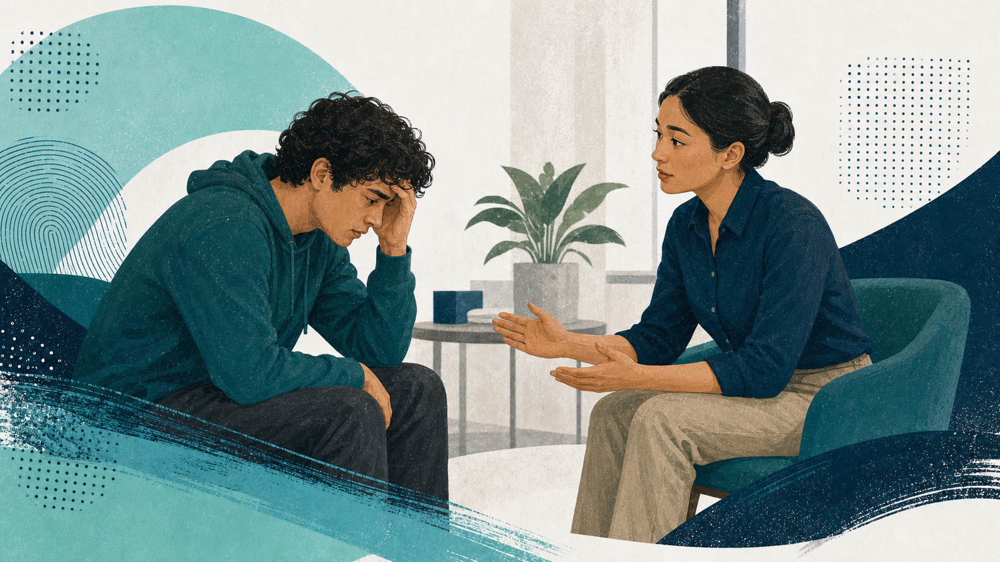
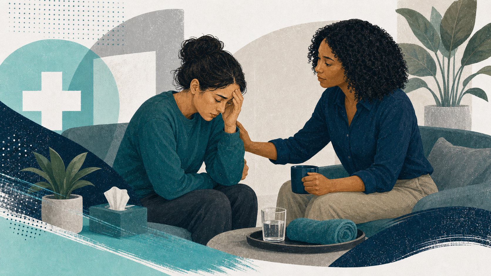
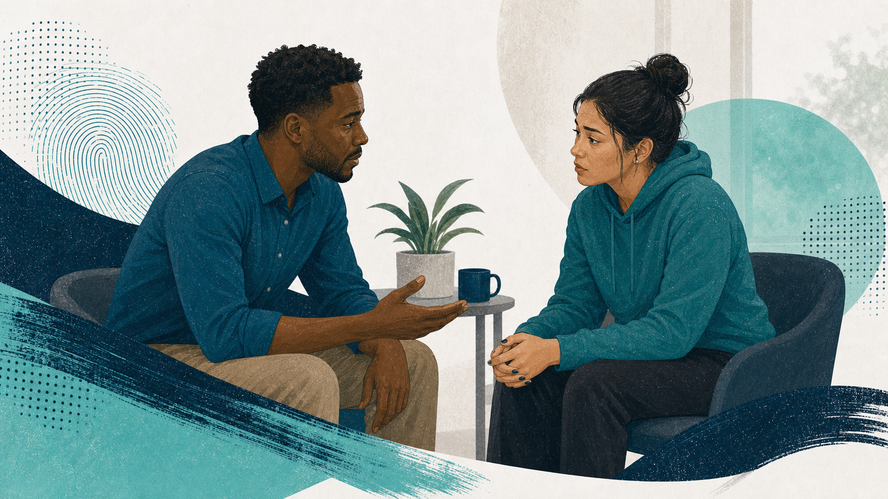

Lesson 2 · 25 minutes · Applying ALGEE in crisis situations with de-escalation, suicide-safety response, and safe referral
shield_person Crisis response
forum De-escalation
health_and_safety Suicide safety
This lesson turns the MHFA crisis content into a practical workflow: recognize risk, stabilize the moment, ask direct safety questions, and connect the person to the right next support.
Define what makes a situation a crisis and spot the presentations that require immediate safety thinking.
Use calm approach, nonthreatening language, and de-escalation habits that reduce pressure instead of increasing it.
Ask directly about suicide when indicated and know what to do when danger, overdose, or severe disorientation is present.
Finish ALGEE by connecting the person to emergency, professional, workplace, peer, or self-help supports that fit the situation.
A crisis is not just a hard moment. It is a situation where safety or basic functioning may be in immediate danger and the next response needs to happen quickly.
Examples include suicidal intent, overdose, severe aggression, medical emergency, or a psychotic state that is disrupting safe functioning.
Panic, disorientation, trauma reactions, or self-injury concerns can escalate quickly when nobody slows the moment down.
The goal is not diagnosis. The goal is to protect life, reduce harm, and choose the right next help without delay.
A supportive crisis response starts with noticing risk, staying grounded, and choosing a stabilizing first move instead of reacting impulsively.
The best crisis support begins before the first sentence. A quick mental scan helps you protect yourself, protect the other person, and avoid missing key context.
Check whether the environment, the person’s behavior, or nearby hazards make it unsafe to approach alone.
Consider privacy, culture, trauma history, likely triggers, and how your role or identity may affect the interaction.
Know your local policy, emergency contacts, mobile crisis options, and the coworkers or supervisors you may need to involve.
People in crisis often need a nervous-system reset before they can absorb options, instructions, or referrals.
Sample opening: “I’m Jordan. I’m concerned about your safety, and I want to stay calm with you while we figure out the next step.”

The first goal is regulation, not persuasion. Calm tone, space, and respectful pacing give the person more room to regain control.
Crisis support becomes a safety operation when danger is imminent. In those moments, the priority is protection, not a perfect conversation.
If someone is in imminent danger, unresponsive, actively suicidal, or medically unstable, call emergency services right away.
Do not leave the person alone when risk is acute if staying is safe and appropriate within your role.
Remove or increase distance from weapons, medications, sharp objects, or other hazards only if you can do that safely.
Loop in coworkers, supervisors, security, EAP, or a crisis team early instead of managing a dangerous situation by yourself.
The common thread is safety, but panic, aggression, and severe psychosis do not look or respond the same way.
Look for: rapid breathing, trembling, chest pain, dizziness, intense fear.
Do first: move to a quieter space, speak slowly, offer grounding, and avoid forcing breathing techniques that increase distress.
Look for: escalating volume, clenched posture, threats, pacing, or property-focused agitation.
Do first: keep distance, reduce stimulation, avoid physical intervention unless trained, and call for help if harm risk continues.
Look for: intense paranoia, hallucinations, or severe disconnection from reality that is disrupting safe behavior.
Do first: stay nonconfrontational, do not argue about what is real, and escalate to emergency or crisis services when safety is at stake.
Some crises are quieter than open aggression, but they still require immediate structure, medical thinking, and dignified care.
First secure the environment, identify urgent needs like medical care or shelter, and create a calm, low-pressure space before asking for more detail.
Address what you notice directly and without shame, assess for medical need, and help the person connect to professional support.
Slow breathing, unresponsiveness, or severe bleeding are emergency cues. Call 911, use trained first-aid steps, and do not delay emergency support.

Stabilization means lowering chaos, identifying urgent needs, and choosing the safest route to care without pressuring the person to explain everything.
Warning signs often show up in language, behavior, and urgency cues together. The presence of several signs raises the need for a direct safety question.
Talking about wanting to die, hopelessness, unbearable pain, or feeling like a burden.
Withdrawal, giving away possessions, increased substance use, sudden mood shifts, or preparing for death.
A clear plan, access to means, recent loss, intense agitation, or a rapid change from distress into eerie calm.
A direct suicide question does not create the idea. It helps you understand the danger level and decide whether urgent protection is needed.
Use clear, nonjudgmental language.
“Are you thinking about ending your life?”
Direct questions can feel serious and compassionate at the same time. The goal is clarity, not alarm.
Once immediate danger is clearer, your job is to lower shame, communicate steadiness, and make the next support step feel doable.
Supportive line: “I’m sorry you’re hurting this much. I’m here with you, and I want us to bring in the right support right now.”
The final two steps are about moving from the crisis moment into the right handoff, then identifying immediate supports that help the person stay safer afterward.
Offer specific options such as emergency services, mobile crisis teams, EAP, primary care, therapists, psychiatrists, or organization-specific crisis resources.
Identify grounding skills, trusted people, peer support, transportation, medication safety, food, rest, and a specific follow-up check-in after the acute moment passes.
Use the source scenario to practice a structured response instead of reacting only to the noise or pressure of the moment.
The person appears confused, loud, and increasingly agitated. The first question is whether anyone is in immediate danger.
Approach only if safe, keep distance, use a calm introduction, and prepare to involve additional support early.
If the person remains disoriented or threatening, move toward emergency or crisis-team involvement instead of trying to manage alone.
Scenarios help you rehearse the order of operations: protect safety, de-escalate, assess, and hand off support without losing calm.
The model works best when the steps stay connected. Each step prepares the next one, and safety judgment shapes how quickly you move.
Look for danger, ask directly when suicide is possible, and decide whether emergency protection is needed.
Use nonjudgmental attention, steady pacing, and enough silence for the person to stay engaged.
Offer factual hope, validate the distress, and explain that help is available.
Move toward emergency, crisis, clinical, workplace, or policy-based supports that fit the level of risk.
Ground the person in immediate coping, trusted supports, and a follow-up plan after the acute moment.
Use current official crisis resources and pair them with your organization’s own policy, supervisor, security, EAP, and local mobile-crisis contacts.
Call or text 988 for free crisis support in the U.S. and use chat when that is the safest option.
Text HOME to 741741 in the U.S. to connect with a live Crisis Counselor.
For imminent danger, medical emergency, or overdose, follow local policy and call 911 or the organization’s emergency/security pathway.
Use the Mental Health First Aid adults page for official course context and training follow-up.
Practice one calm opener that communicates concern without blame or panic.
Rehearse a direct suicide-risk question so it is available under pressure.
Identify which numbers, people, or policies you need close at hand in your setting.
Use the scenario and text simulation activities to build fluency before a real crisis tests it.